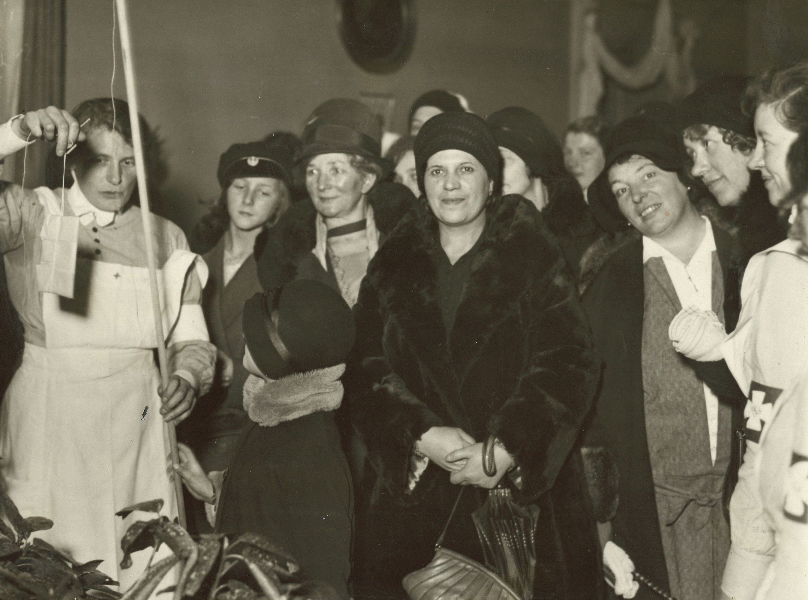
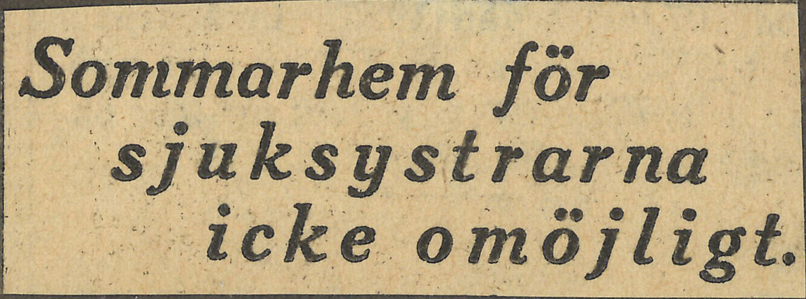
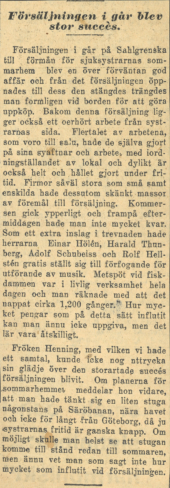
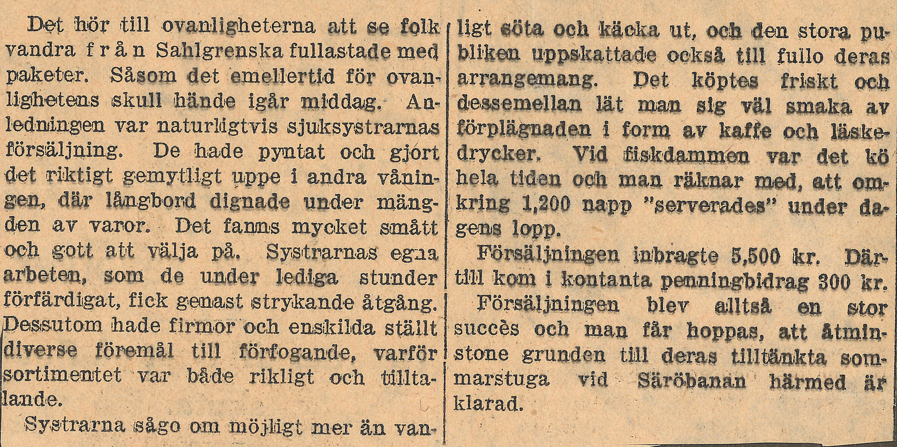

Ett fotografi
Bildbeskrivning
Ett svartvitt fotografi från sjuksystrarna vid Sahlgrenskas julförsäljning den tredje december 1930. Till vänster i bilden syns en sjuksyster och ett barn hålla i ett metspö till försäjningens fiskedamm. En påse sitter på kroken. Flera kvinnor i ytterkläder och en sjuksyster tittar på, två av kvinnorna tittar in i kameran.Ett tidningsurklipp
Transkribering
Sommarhem för
sjuksystrarna
icke omöjligt.
Ett tidningsurklipp
Transkribering
Försäljningen i går blev
stor succés.
Försäljningen i går på Sahlgrenska
till förmån för sjuksystrarnas som-
marhem blev en över förväntan god
affär och från det försäljningen öpp-
nades till dess den stängdes trängdes
man formligen vid borden för att göra
uppköp. Bakom denna försäljning lig-
ger också ett oerhört arbete från syst-
rarnas sida. Flertalet av de arbetena,
som voro till salu, hade de själva gjort
på sina syaftnar och arbete, med iord-
ningställandet av lokal och dylikt är
också helt och hållet gjort under fri-
tid. Firmor såväl stora som små samt
enskilda hade dessutom skänkt massor
av föremål till försäljning. Kommer-
sen gick ypperligt och frampå efter-
middagen hade man inte mycket kvar.
Som extra inslag i trevnaden hade
herrarna Einar Hölén, Harald Thun-
berg, Adolf Scubeiss och Rolf Hell-
stén gratis ställt sig till förfogande för
utförande av musik. Metspöt vid fisk-
dammen var i livlig verksamhet hela
dagen och man räknade med att det
nappat cirka 1,200 gånger.” Hur myc-
ket pengar som på detta sätt influtit
kan man ännu icke uppgiva, men det
lär vara åtskilligt.
Fröken Henning, med vilken vi hade
ett samtal, kunde icke nog uttrycka
sin glädje över den storartade succés
försäljningen blivit. Om planerna för
sommarhemmet meddelar hon vidare,
att man hade tänkt sig en liten stuga
någonstans på Säröbanan, nära havet
och icke långt från Göteborg, då ju
systrarnas fritid är ganska knapp. Om
möjligt skulle man helst se att stugan
komme till stånd redan till
sommaren, men ännu vet man som
sagt inte hur mycket som influtit vid
försäljningen.
Ett tidningsurklipp
Transkribering
Det hör till ovanligheterna att se folk
vandra från Sahlgrenska fullastade med
paketer. Såsom det emellertid för ovan-
lighetens skull hände igår middag. An-
ledningen var naturligtvis sjuksystrarnas
försäljning. De hade pyntat och gjort
det riktigt gemytligt uppe i andra vånin-
gen där långbord dignade under mäng-
der av varor. Det fanns mycket smått
och gott att välja på. Systrarnas egna
arbeten, som de under lediga stunder
förfärdigat, fick genast strykande åtgång.
Dessutom hade firmor och enskilda ställt
diverse föremål till förfogande, varför
sortimentet var både rikligt och tillta-
lande.
Systrarna sågo om möjligt mer an van-
ligt söta och käcka ut, och den stora pu-
bliken uppskattade också till fullo deras
arrangemang. Det köptes friskt och
dessemellan lät man sig väl smaka av
förplägnanden i form av kaffe och läske-
drycker. Vid fiskdammen var det kö
hela tiden och man räknar med, att om-
kring 1,200 napp ”serverades” under da-
gens lopp.
Försäljningen inbragte 5,500 kr. Där-
till kom i kontanta penningbidrag 300 kr.
Försäljningen blev alltså en stor
succés och man får hoppas, att åtmin-
stone grunden till deras tilltänkta som-
marstuga vid Säröbanan härmed är
klarad.